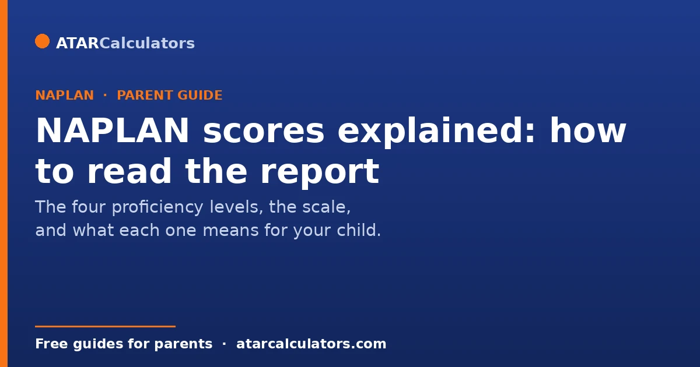
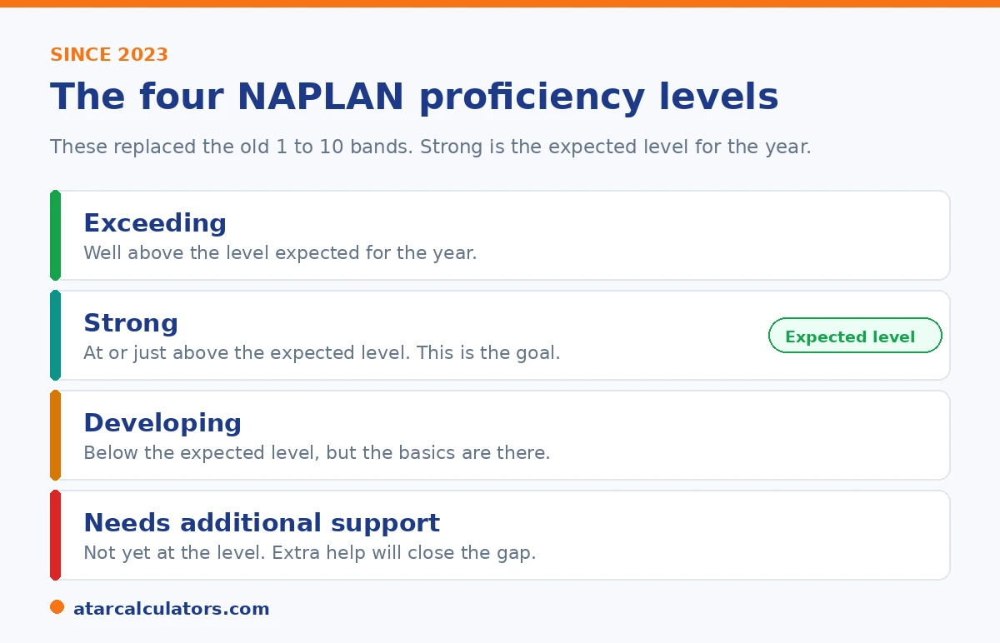

Here is the short version. Your child's NAPLAN report shows how they are going in five areas: reading, writing, spelling, grammar, and numeracy. Since 2023, the report uses four levels. They are Exceeding, Strong, Developing, and Needs additional support. Strong is the level expected for your child's year. The report marks your child with a dot on a scale and shows the national average next to it. This guide explains each part of the report, what the four levels mean, and what to do next.
Opening your child's NAPLAN report can feel stressful. The charts and numbers are not always clear. The good news is that the report is simpler than it looks, once you know what each part means.
NAPLAN is a national test. Children sit it in Years 3, 5, 7, and 9. It checks reading, writing, spelling, grammar and punctuation, and numeracy. It is one snapshot of one day. It does not measure how clever your child is. It does not decide what year level they go into, or which high school they can attend. You can use our NAPLAN score calculator to see what a score means at your child's year level.
Key takeaways
- Since 2023, NAPLAN uses four levels: Exceeding, Strong, Developing, and Needs additional support.
- Strong is the level expected for your child's year. It is the goal.
- The report shows a dot for your child and a shaded box for the typical range.
- You also get a scaled score and the national average for each area.
- Scores from 2023 on cannot be compared to scores from 2008 to 2022.
- One test on one day is not the full picture. Talk to your child's teacher.
What NAPLAN tests, and when
NAPLAN tests five areas: reading, writing, spelling, grammar and punctuation, and numeracy. Spelling and grammar sit together under one heading called Conventions of Language. Your child sits NAPLAN four times at school: in Year 3, Year 5, Year 7, and Year 9.
Since 2023, children sit the test in March, near the start of the year. Most of the test is done online. The online test is adaptive, which means it changes as your child answers. Year 3 writing is the one part still done on paper. You get the results early in Term 3, usually around July.
Here is what each area covers. Reading asks your child to read short texts and answer questions about them. Writing gives them one piece to write in a set time, scored on ideas, structure, spelling, and punctuation. Spelling tests words of growing difficulty. Grammar and punctuation asks them to pick the correct form in sentences. Numeracy asks them to solve number and maths problems.
The four proficiency levels
Before 2023, NAPLAN used a scale of 10 bands. That scale is gone. The report now uses four levels. Here is what each one means.
If you are reading an older report that shows bands, our guide to NAPLAN bands explains how the old bands line up with the new levels.

Exceeding means your child is well above the level expected for their year. Strong means they are at or just above the expected level. Strong is the goal for most children. Developing means they are below the expected level, but the basics are there. Needs additional support means they are not yet at the level and would benefit from extra help.
A level is a group, not a single mark. Two children can both be Strong and still sit at different points inside it. That is why the scaled score matters too. More on that below.
How to read the report, step by step
The report looks busy, but you only need to find a few things. Work through it like this.
- Start with the area. Each area is shown on its own. Your child may be Strong in one and Developing in another. That is normal.
- Find the dot. Your child's result is a dot on a scale. The higher the dot, the higher the result.
- Look at the shaded box. Next to the dot is a shaded box. This is the typical range for your child's year. If the dot sits inside the box, your child is in the typical range. Above the box is above typical. Below the box is where extra help may be useful.
- Check the national average. A small marker shows the national average. It tells you how your child compares to all students in that year across Australia.
- Read the skill description. The report describes what students at that level can usually do. This shows you the next step.
Want to see what a NAPLAN score means at your child's year level?
Try the NAPLAN score calculator →What the scaled score means
The online test is adaptive. Children do not all answer the same questions. A child who answers harder questions can earn a higher score. To keep this fair, NAPLAN turns each result into a scaled score. This score lets you compare results, even when the questions were different.
The scaled score also shows where your child sits inside their level. A child at the lower end of Strong may still need help with some skills. A child at the top of Developing may be close to Strong. So look at the level and the scaled score together.
How your child compares to others
The report gives you three ways to compare. The first is the national average for that year level. The second is the school average, shown when at least five students at the school sat the test. The third is the typical range, which is the shaded box.
The box usually covers the middle group of students in that year. If your child's dot is inside the box, they are in that middle group. Above the box is the top group. Below the box is the group that may need more support. Comparing is useful, but every child grows at their own pace.
An example: reading one child's report
Let us make this real. Say your daughter is in Year 5. Her report shows Strong in numeracy and Developing in reading. Her dot for numeracy sits inside the shaded box, near the top. Her dot for reading sits just below the box.
What does this tell you? In numeracy, she is at the expected level for Year 5, and doing well. In reading, she is a little below the expected level, but the basics are there. It does not mean she is bad at reading. It means reading is the area to give a bit more attention.
A good next step is simple. Read with her for ten minutes a night. Ask her what happened in the story. Then check in with her teacher about how her reading is going in class. One low area on one test is a starting point, not a label.
What to do with the results
The report is a tool, not a verdict. Here is how to use it well.
Start with the wins. Praise the areas where your child did well. Then look for gaps. If one area is lower, that is where to focus. Talk to your child's teacher. They see your child every day and can add context the report cannot. Set one small goal together, like reading for ten minutes each night. Keep it light. Pressure does not help children learn. Most of all, do not judge your child on one test from one day.
How to talk to your child about their results
Your child will pick up on how you react. So the way you talk about the report matters. Start by asking how they felt about the test. Listen first. Then point to something they did well, even if it is small.
If an area was low, frame it as a chance to grow, not a problem. You could say, this shows us what to work on next. Avoid comparing them to brothers, sisters, or classmates. Keep the focus on their own effort and progress. A calm, kind chat does more good than any score.
Common mistakes parents make
A few traps are easy to fall into.
The first is comparing this year's score to a score from before 2023. You cannot. The scale changed, so the numbers do not match. The second is treating NAPLAN like a pass or fail test. It is not. It shows where your child is, not whether they passed. The third is panicking over one low area. One result does not define your child. The fourth is comparing your child only to other children. Their own progress over time matters more.
It is worth seeing why each of these traps distorts the picture. This is because avoiding them is what lets the report do its job. Comparing across the 2023 change is not just discouraged but genuinely meaningless. The old band scale and the new proficiency levels were built on different logic. So a number from before does not translate, and any comparison invents a trend that is not there. Treating NAPLAN as pass or fail imports a framing the test never had. It is a diagnostic that locates where a child sits across a national scale, not a gate they clear or miss. So reading it as pass or fail turns useful information into false reassurance or needless alarm. Panicking over one low domain overweights a single snapshot. Reading, writing, numeracy and language conventions are separate. A child can reasonably be stronger in some than others. One result on one set of days is a data point, not a verdict. It is best read alongside everyday classwork and the teacher's view. Comparing only to other children misses the most valuable signal the report offers. That is your own child's growth over time. A scaled score rising across successive tests shows real learning even when the level is unchanged. And that trajectory tells you more than where they sit against a peer average. The healthiest way to read any NAPLAN report is to judge each domain by its current-year level, and watch the scaled score for growth across years. Keep a single result in proportion. Use it to guide support, rather than to rank or to worry.
What NAPLAN does not measure
NAPLAN is useful, but it has limits. It does not measure how creative your child is. It does not measure how kind they are, how hard they try, or how well they work with others. It does not measure how good they are at art, sport, music, or science.
It is a check of literacy and numeracy on one day. It is one piece of a much bigger picture. Your child is far more than a dot on a scale.
Should you prepare your child for NAPLAN?
Many parents ask if they should prepare their child for NAPLAN. You do not need to. NAPLAN checks skills your child is already learning at school. Heavy drilling can add stress, and it does not help much.
The best preparation is the everyday kind. Read together. Talk about numbers in daily life, like time and money. Make sure your child knows the test is online and adaptive, so nothing surprises them on the day. Then let them do their best. Calm beats cramming.
Common questions
What is a good NAPLAN score?
A good result is reaching the Strong level for your child's year. Strong means they are at or above the expected level. Exceeding is higher again. There is no single good number, because the scale is different for each year level. Use our NAPLAN score calculator to see what a score means for your child's year.
What do the four NAPLAN levels mean?
Exceeding is well above the expected level. Strong is at or just above it. Developing is below it, with the basics in place. Needs additional support means extra help would close the gap. Strong is the level expected for the year.
Is Developing a fail?
No. NAPLAN is not a pass or fail test. Developing means your child is below the expected level for their year, but they understand the basics. It points to an area to work on, not a failure. Many children are Developing in one area and Strong in another.
When do NAPLAN results come out?
Schools give parents the Individual Student Report early in Term 3, usually around July. If you have not got it by mid-August, contact your school.
Can I compare this year's score to a few years ago?
No. In 2023, NAPLAN changed its scale and its levels. Scores from 2023 onwards cannot be compared to scores from 2008 to 2022. You can compare results from 2023 onwards to each other.
Does NAPLAN affect high school or selective school entry?
NAPLAN does not decide high school entry on its own. Some selective schools and programs may look at it as one piece of information, but they run their own entry tests. You can read more in our guides on the NSW selective test and the Opportunity Class test.
What is a scaled score?
A scaled score is a number that lets you compare results fairly. The online test is adaptive, so children answer different questions. The scaled score adjusts for this. It also shows where your child sits inside their level.
My child did not do well. What should I do?
Start by staying calm. One test on one day is a small part of the picture. Look at which area was low, then talk to your child's teacher about the next steps. Set one small, steady goal at home. Progress over time matters more than a single result.
Can my child sit NAPLAN again?
No. NAPLAN is a yearly test, sat only in Years 3, 5, 7, and 9. Your child cannot resit it in the same year. They will sit it again at the next year level.
See what your child's score means
Enter a NAPLAN score and year level to see the level and where it sits. Quick, free, and no signup.
Open the NAPLAN score calculator →Related guides
This guide is general information for parents, not formal advice. NAPLAN reporting can change, so always check the official details on the National Assessment Program (NAP) site, and talk to your child's teacher. Reviewed by the ATARCalculators Editorial Team.